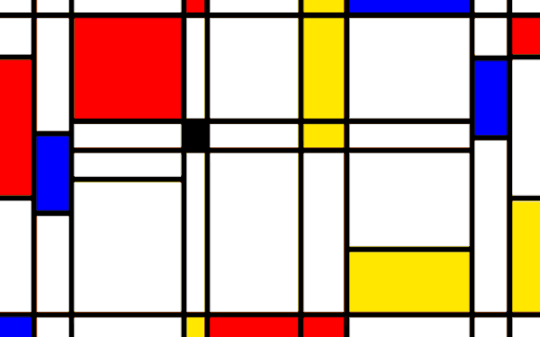

Dutch for The Style, Die Stijl was founded in 1917. The artists most recognized with the movement were the painters Theo van Doesburg, who was also a writer and a critic, and Piet Mondrian, along with the architect Gerrit Reitveld. The movement proposed ultimate simplicity and abstraction through which they could express a Utopian idea of harmony and order.
The harmony and order was established through a reduction of elements to pure geometric forms and primary colors. Die Stijl was also the name of a publication discussing the groups theories which was published by van Doesburg. The publication Die Stijl represents the most significant work of graphic design from the movement, but the ideas of reduction of form and color are major influences on the development of graphic design as well.
The Netherlands-based De Stijl movement embraced an abstract, pared-down aesthetic centered in basic visual elements such as geometric forms and primary colors. Partly a reaction against the decorative excesses of Art Deco, the reduced quality of De Stijl art was envisioned by its creators as a universal visual language appropriate to the modern era, a time of a new, spiritualized world order. Led by the painters Theo van Doesburg and Piet Mondrian - its central and celebrated figures - De Stijl artists applied their style to a host of media in the fine and applied arts and beyond. Promoting their innovative ideas in their journal of the same name, the members envisioned nothing less than the ideal fusion of form and function, thereby making De Stijl in effect the ultimate style. To this end, De Stijl artists turned their attention not only to fine art media such as painting and sculpture, but virtually all other art forms as well, including industrial design, typography, even literature and music. De Stijl’s influence was perhaps felt most noticeably in the realm of architecture, helping give rise to the International Style of the 1920s and 1930s.
